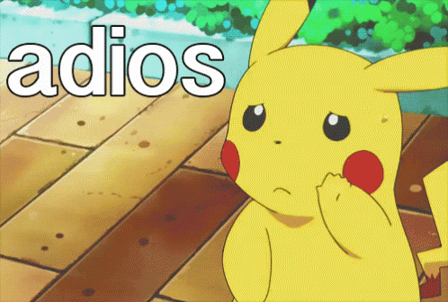

Luego de haber concluido o finalizado todo el esbozo de terminos, descripciones, explicaciones y
ejemplificaciones en lineas anteriores, y a traves de un analisis exhaustivo y estudio sobre lo mas
relevante, pude concluir lo siguiente:
Las redes sociales son paginas web destinas exclusivamente para usuarios que quieran interactuar con
otras personas, desde cualquier lugar del mundo siempre y cuando se disponga de una computadora o un
dispositivo con la tecnologia de redes sociales incorporado.
En los ultimos anos y con el devenir del tiempos las redes sociales han alcanzado un auge de significativa
importancia, en Venezuela no nos quedamos atras ante esta tecnologia y somos unos de los paises latinos que
mas utiliza esta tecnologia en crecimiento, actualmente son infinitas las redes sociales o paginas sociales,
a pesar de la gran variedad todas tienen practicamente el mismo proposito y trabajan bajo un mismo sistema,
registro y compartir informacion, ya sea en forma de texto, imagenes o videos.
